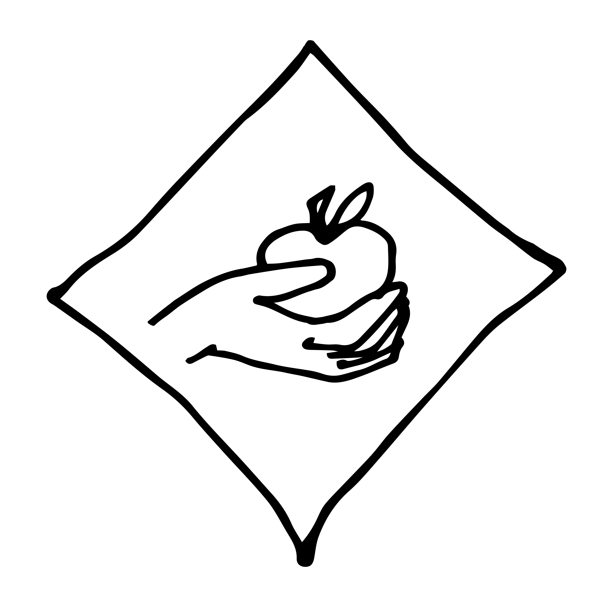
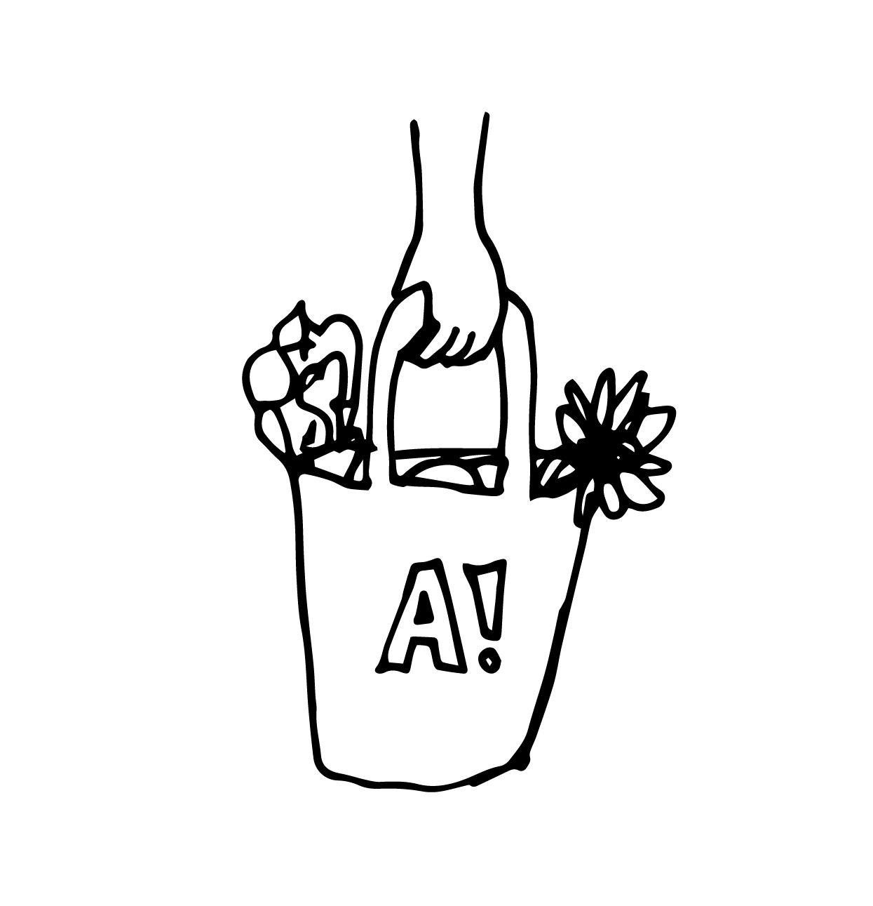
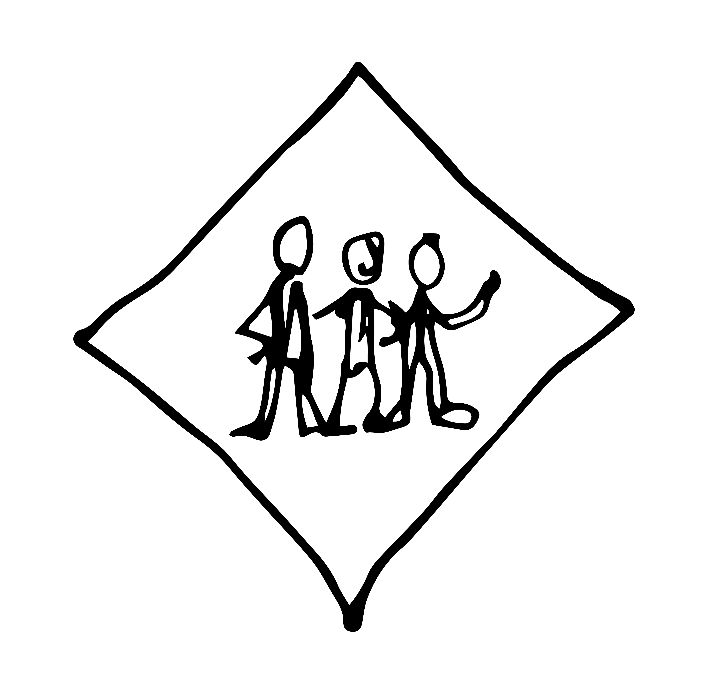
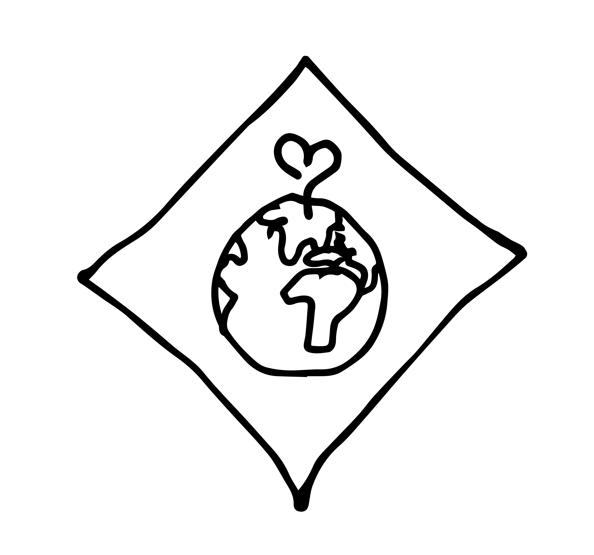
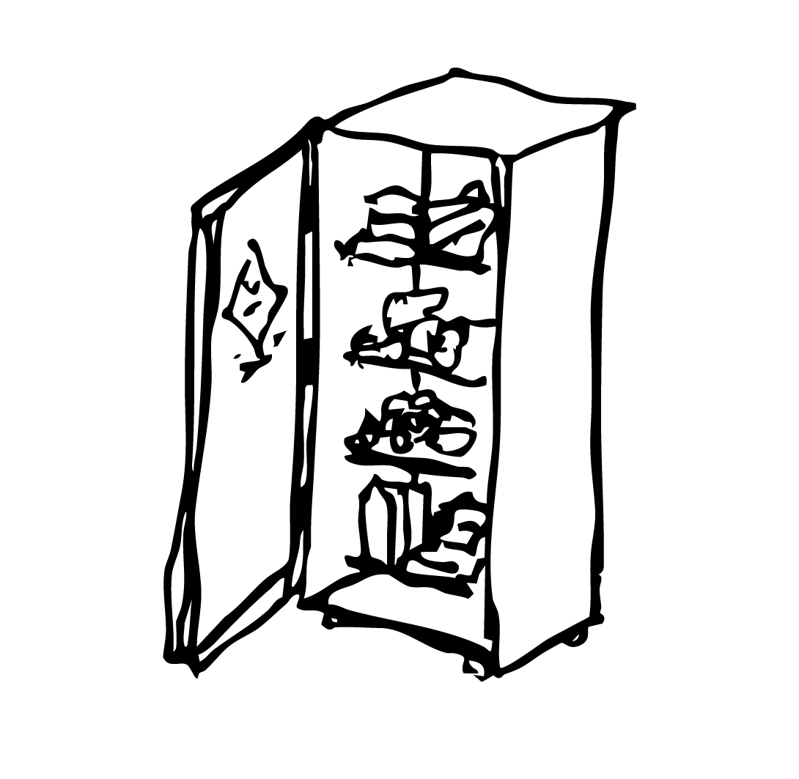

Aalto
Foodsharing
Foodsharing encourages people to share leftover food that would otherwise go to the trash. We save & share food!

2
Sharing Points

3
Partners

30+
Volunteers

10 000+
kg Rescued
About Us
Foodsharing is a global movement aimed at reducing food waste together with businesses such as stores and restaurants to prevent edible food from being discarded.
Aalto Foodsharing (A!FS) is a grassroots initiative in Otaniemi dedicated to minimizing food waste, sharing food among students, and fostering a sustainability-focused community. We maintain a campus community fridge, conduct regular food pickups, and organize Foodsharing events.

Questions & Answers
A!FS Map
Our map of community fridges, partner locations and friends. Click markers to see details.
